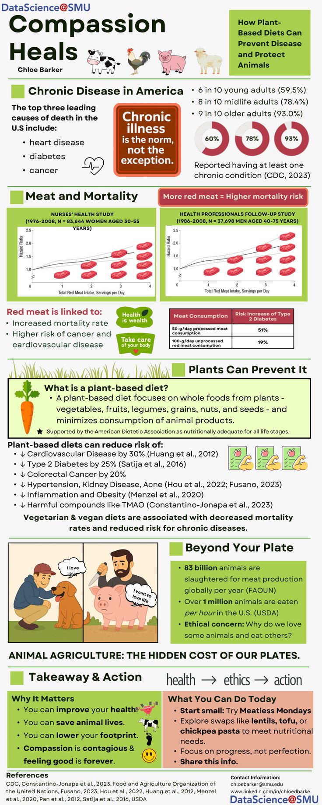

Compassion Heals: Diet, Health Evidence & Animal Welfare
A self-directed infographic on chronic disease and diet, sourced from published cohort studies and designed to turn public-health evidence into a visual narrative readable in one pass.

Communicating evidence about diet and chronic disease
The infographic explores published associations between diet and chronic disease alongside an animal-welfare argument. This case study focuses on evidence communication, rather than establishing that a dietary change will prevent disease for an individual.
Two long-running cohort studies anchor the argument
The centerpiece data comes from the Nurses' Health Study (83,644 women, 1976-2008) and the Health Professionals Follow-Up Study (37,698 men, 1986-2008), both showing hazard ratios for mortality climbing with red meat servings per day.
Beyond the plate
The original infographic combines health evidence with an ethical argument about animal agriculture. Those are distinct forms of reasoning: cohort associations inform the health discussion, while the animal-welfare position reflects the advocacy purpose of the piece.
What the piece asks the reader to do
Lead with the baseline, not the ask
Opening with how common chronic illness already is (versus opening with a diet recommendation) gives the reader a reason to keep reading before any ask shows up.
Cite the cohort, not just the conclusion
Naming the study size and duration (83,644 women over 32 years) helps readers understand the study context, while design and confounding still limit interpretation.
End with something achievable
The closing call to action is deliberately small, "try Meatless Mondays", not a full lifestyle overhaul, as an example of a specific action rather than a tested behavior-change intervention.
Association is not a prevention guarantee
The cited studies are observational and remain subject to confounding and dietary measurement error. Relative estimates depend on the outcome and comparison group. The original infographic is preserved as a project artifact; its prevention language should be read with these limitations.
Sources: Pan et al. (2012); Huang et al. (2012); Satija et al. (2016).